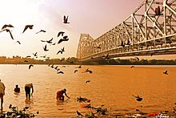
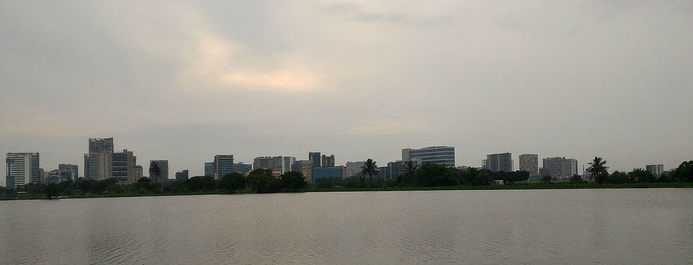

Kolkata
Kolkata /koʊlˈkɑːtə/ ([kolkat̪a] (About this sound listen),
also known as Calcutta /kælˈkʌtə/, the official name until 2001) is the capital
of the Indian state of West Bengal. Located on the east bank of the Hooghly River,
it is the principal commercial, cultural, and educational centre of East India,
while the Port of Kolkata is India's oldest operating port and its sole major
riverine port. The city is widely regarded as the "cultural capital" of India,
and is also nicknamed the "City of Joy". In 2011, the city had a population of
4.5 million, while the population of the city and its suburbs was 14.1 million,
making it the third-most populous metropolitan area in India. Recent estimates
of Kolkata Metropolitan Area's economy have ranged from $60 to $150 billion
(GDP adjusted for purchasing power parity) making it third most-productive
metropolitan area in India, after Mumbai and Delhi.[12][13][14]
← Main Info

In the late 17th century, the three villages that predated Calcutta were ruled by
the Nawab of Bengal under Mughal suzerainty. After the Nawab granted the East
India Company a trading licence in 1690,[16] the area was developed by the
Company into an increasingly fortified trading post. Nawab Siraj ud-Daulah
occupied Calcutta in 1756, and the East India Company retook it the following
year. In 1793 the East India company was strong enough to abolish Nizamat (local
rule), and assumed full sovereignty of the region. Under the company rule, and
later under the British Raj, Calcutta served as the capital of British-held
territories in India until 1911, when its perceived geographical disadvantages,
combined with growing nationalism in Bengal, led to a shift of the capital to
New Delhi. Calcutta was the centre for the Indian independence movement; it
remains a hotbed of contemporary state politics. Following Indian independence
in 1947, Kolkata, which was once the centre of modern Indian education, science,
culture, and politics, suffered several decades of economic stagnation.


As a nucleus of the 19th- and early 20th-century Bengal Renaissance and a
religiously and ethnically diverse centre of culture in Bengal and India,
Kolkata has local traditions in drama, art, film, theatre, and literature. Many
people from Kolkata—among them several Nobel laureates—have contributed to the
arts, the sciences, and other areas. Kolkata culture features idiosyncrasies
that include distinctively close-knit neighbourhoods (paras) and freestyle
intellectual exchanges (adda). West Bengal's share of the Bengali film industry
is based in the city, which also hosts venerable cultural institutions of
national importance, such as the Academy of Fine Arts, the Victoria Memorial,
the Asiatic Society, the Indian Museum and the National Library of India. Among
professional scientific institutions, Kolkata hosts the Agri Horticultural
Society of India, the Geological Survey of India, the Botanical Survey of India,
the Calcutta Mathematical Society, the Indian Science Congress Association, the
Zoological Survey of India, the Institution of Engineers, the Anthropological
Survey of India and the Indian Public Health Association. Though home to major
cricketing venues and franchises, Kolkata differs from other Indian cities by
giving importance to association football and other sports.